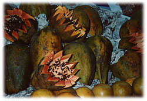

|
「気がついたみたいだよ」
額から顔にかけて冷たいものがあてがわれているようだった。ひやりとした感触は唇にもやってきた。誰かが額や、耳や、頬を冷やしたタオルで拭いてくれている。
私は目を開けた。
民家の軒先であろうか。白壁とレンガだけで造られたみすぼらしい家が目の前にあり、突き出た屋根が日光を遮っていた。私はちょうどその影の部分に寝かされていた。背中にはごつごつとした板敷きの感触がある。空の半分は大きな木で隠れていて、鬱蒼とした葉が灰色に揺れていた。
四つの顔が私を覗きこんでいた。全員メキシコの女である。首を吊ろうとしていた若い娘も混じっている。彼女は心配そうな表情で私を見つめ、冷たいタオルで頬のあたりを拭いてくれていた。他には十代に見える少女が二人。五十代ぐらいの目付きの鋭い中年女性が一人。
「あの・・・私は、どうしたんでしょう？」
自分がどういう状態になっているのかもわからないまま私は呟いていた。
「しばらく、気を失われていたようです」
コップの水を私の唇に垂らしながら少女の一人が言う。
まだ十代前半かもしれない。言葉に無垢な響きがある。
「ここはどこですか？」
私がそう尋ねたことで、彼女たちは顔を見合わせた。
「ここは・・・もちろん、エル・トーレの村ですよ。だけどあんた、トーレの木の精じゃないのかい？」
中年女性は私の頭の下に枕を差しこもうとしてくれているようだったが、不可解なことを言う、という表情で私を、続いて首を吊ろうとした娘をまじまじと見つめた。
「トーレの木の精って？」
「まあ、あなたは御自分のことをわかっていないのですか？ よほどひどく頭を打ったんじゃありませんか」
問題の娘はなぜか大慌てで私の唇のまわりを拭き始めた。しかしその時の私には彼女がなぜ焦りを見せているのか、その意味がわからなかった。
「エル・トーレって、どこですか？ ここはオアハカではないのですか？」
再び彼女たちは顔を見合わせる。
「ねえ、お姉ちゃん。この人本当は・・・」
そう言われて、若い娘は私の口をタオルでふさいでしまった。
そこでピンとくるものがあった。
言えることと、言えないことがあるのだ。
私は決定的な目撃者である。
彼女たちはきっと親子なのだ。母一人に娘三人が私の介抱をしてくれている。だとすれば、自殺を図った彼女は私との出会いの詳細を秘密にしたいはずだ。木の下で何をしようとしたのか、とても言えるものではない。
案の定、彼女はタオルを押さえる指に力を入れてきた。
「木の精さん、かどうかはわかりませんが、ここはオアハカ州のエル・トーレの村ですよ。あなたはトーレの木の祠から飛び出してきて、自ら木の精だと語ったんです。コーヒー豆の袋を引きずった大きなネズミを従えて」
「本当かい、タリア？」
「本当よ、お母さん」
首を吊ろうとした下膨れの娘はタリアという名前であるらしい。
彼女は少し口籠り、それから突拍子もないことをしゃべり始めた。
「あの、あの・・・そうよ、お母さん。さっきも言ったけれど、反物を持ってトーレの木のところを通りかかったら、いきなり男たちが現れて、私を脅したの。反物を全部よこすか。それとも体をよこすかって」
「そんなひどいことまで言ったのかい。さっきは、襲ってきたのはただの物取りだって言ったじゃないかい」
母親の声が硬くなり、他の娘二人は怯えた表情になった。
「反物を渡しても、私は陵辱されたかもしれない。目がぎらぎらとした残酷そうな男たちだった。ソンブレロもかぶっていなかった」
「それでお姉ちゃん、どうしたの」
「気味が悪い、まだこのあたりにいるのかしら」
コップを持った少女の手が震えている。私の鼻に水が不用意にかかった。
「私は嫌だって言ったの。家族とともに苦労して作り上げた反物を渡すことなんてできないって。もちろん私の体にも指一本触らせないって、そう言ったわ。でも、奴らは私を囲むように追い掛けてきて、それで私はトーレの木の祠まで追い詰められた」
怪訝な顔になりながらも、母親が胸の前で十字を切った。
「そうしたらいきなり・・・この人が、祠から泥だらけで現れて」
「ああ、神様」
少女たちも十字を切る。
「まず、一緒に現れた大きなネズミが私を追い詰めている男に体当たりをしてくれたの。男たちは悲鳴をあげたわ。それからもちろんこの人も戦ってくれて・・・百まで数えない内に男たちは逃げていった。ばらばらになって。だけどこの人はばったりと倒れてしまった。倒れながらこの人は言ったわ。私はトーレの木の精である。先住民インディヘナの霊である。奇蹟を起こすために三日間だけよみがえった。この村を救おうって」
気が付けば四人とも祈るような目で私を見ている。私の頭はひどく混乱してきた。タリアというこの娘にしてみれば、実は自殺しようとしたところを止められたの、などと家族に打ち明けられるものではない。そこを考えてやれば、何を言うべきなのか、何を暴露してはいけないのか、最低限のことはわかる。男たちに襲われたという作り話はいかにも安っぽいが、それでも話を合わせてやらねばなるまい。しかしそれ以外の話はどうなのだろう。私はおそらく、根を登り続けた疲労と突然の強い直射日光のために気を失ったのだ。その瞬間にマルセロかボラボラがしゃべり始めたとすれば。
事実、タリアはマルセロを見ている。あれだけ奇妙なネズミを実際に見てしまえば木の精という言葉を信じてしまったとしても不思議はない。それに私たちモンゴロイドはユーラシア大陸と北米大陸が北限で地続きだった太古、環太平洋を旅して南米まで辿り着いたアメリカーナ・インディヘナの遠い祖先である。日本人とメキシコ先住民は人種的に兄弟みたいなものなのである。カルロスは日本人を見ると、あれ、田舎の誰々に似ている、と思うことがあったそうだ。それは私にも言える。インディヘナの血が濃いメキシカンの子供を見ると、木に登ってアケビを食べていた城ケ崎の悪ガキたちを思い出すことがあるのだ。そのぐらい共通した面影がある上に、祠から出てきたばかりの私は彼女が言うように泥だけらだったはずだ。先住民インディヘナの霊、というのは本当に頷けそうな自己紹介である。その大きなお世話を誰がしたのか、ということが問題なのだが。
「まったく・・・ボラボラめ」
「何か」
私がしゃべろうとすると、タリアがかぶせるように言葉をぶつけてきた。自殺を図ろうとしたことを私が家族にばらすかもしれないとまだ思っているのだろうか。私はタオルを握ったままの彼女の指に触れた。
「大丈夫。あの男たちはもう来ませんよ。きっともう今頃は、釘サボテンでも踏んづけて苦しんでいますよ。もう忘れてやりなさい」
「手押し車に載せてここまで引っ張ってきた時は情けない男に見えたけどねえ。あんたがタリアを助けてくれたってことは、どうやら本当みたいだね」
母親がそう言い、四人全員が胸の前でもう一度十字を切った。タリアは初めて安堵した顔になり、口元をうっすらと緩めてみせた。
しかしお陰で私は大変なことになった。地表に出たと思ったら、木の精だかインディヘナの霊だか、何だかうさん臭い化物にされてしまい、おまけに三日間でなにがしかの奇蹟を行わなければいけないらしい。しかもその上に・・・実はこちらの問題の方がよほど深刻なのだが・・・私の身体にはひどい変調が起きていた。
それは色彩に関する事件である。どう説明すべきなのかが私にはわからない。祠から飛び出して以降、私は色を感じられなくなっていたのだ。私を囲んでいる四人の女性の衣装はメキシコの民族衣装にしては地味でみすぼらしいものだった。しかしいくら何でも布地には色彩があるはずだった。それなのに私にはわからないのだ。彼女たちの肌も、目も、髪も、すべて白黒の濃淡にしか映らない。いや、それだけではない。木々の葉や軒先で咲いている花々もすべて灰色に見えた。その花にくちばしを刺して飛び回っているハチドリにも色がなかった。本来なら輝くばかりの青であろうメキシコの空さえもひどく重い鉛色をしていた。雲などひとつもないというのに。
簡単に言ってしまえば、私は白黒テレビの世界に入りこんでしまったようなのだった。のんびりしたことは言ってられないが、そう例える以外に適当な言葉が見つからない。驚愕とともに、どこかにふと懐かしさが漂うモノトーンの世界である。
昭和四十年代半ばまで、日本のテレビは白黒が普通だった。どこの家でもだいたいはモノトーンの画面を見ていた。画面とはそういうものだと思っていた。カラーテレビも随分と高い値段で売られていたが、まだまだテレビ局にカラーで番組を統一するだけの機材と能力が備わっていなかった。ぽつぽつと現れ始めたカラー番組は、新聞の番組欄に特別に「カラー」と印されていたほどだ。つまりカラーテレビを持っていても、カラーの番組だけを見られたわけではない。番組の多くは依然白黒のままだったのである。
私の家にあった１７インチのテレビはもちろん白黒で、初めからそうなのだから特に違和感は抱かなかった。映画は総天然色といってすでにカラーが主流になっていたが、それでも本編の始まる前に上映されるニュース映画は決まって白黒だった。要するにテレビでも映画でもニュースと言えば自動的に白黒になるわけで、私などはアナウンサーをこの世でもっとも地味な職業と捉えていたぐらいだ。なぜなら彼らは今の時代のアナウンサーとは違って冗談ひとつ飛ばさず、硬い口調でベトナム戦争の悲劇を伝える白黒のクソ真面目人間に見えたからである。
その白黒の世界が目の前にあった。いや、私自身が白黒になっていた。泥が付いたままの指や、異臭を放っているシャツやズボン、むきだしの足までが白黒テレビで見るそれだった。
ネズミ国連を旅立つ直前、サンホセは「火山が噴火したみたいな」というものの言い方をしていた。憂鬱の砂嵐が通り過ぎた後、その村には異変が起きた。まるで火山が噴火したみたいだと。私にはその言葉の意味がわからなかった。ボラボラたちと推測したのは、火山灰のようなものが降り積もって大地が灰色になってしまったのかもしれないということだった。しかし私の目を通す限り、これはその推測を遥かに越えた完璧なまでの色の失われ方である。地面だけならともかく、私に話しかけてくる人間までがモノトーンでしか存在しないというのはどうあっても信じ難い。これはサンホセが言っていた火山うんぬんとは別の問題であろう。やはり私の目か、視神経とつながる脳のどこかが異常をきたしたのだ。木の祠からいきなり飛び出したあの時からこの変調は始まった。目の順応を急ぐあまりどこかが壊れてしまったのだろうか。こうなったら一刻も早くマルセロやボラボラと再会するしかない。奇蹟だとか、村を救うだとか、混乱した私一人ではどうにもならない大仕事である。それ以前に私の目が治らなければ、三日どころか三年経っても何も起こせるはずがない。だいたい奇蹟の意味がわからない。私は何をするべきなのか。あるいはこのまま逃げるべきなのか。その前に私の目はどうなるのか。
「それで、大きなネズミはどうしましたか。私は彼が必要なのです。彼の背負っていたコーヒー豆の袋も」
モノトーンの女たちを見ながら、私は上半身を起き上がらせた。
「大丈夫ですか。まだここに寝ていてもいいんですよ。具合がよくなったら水を浴びてもらって。それから何か食べていただいて。今はあまりお話しにならないで」
タリアは私の背中に腕を回しながら、「お願いですから家族には何も言わないで下さい」と、目で訴えるような表情をしてみせた。私は瞬間的に片目をつぶる。
「ありがとう。シャワーも食べ物もまるで夢のようです。みなさんのように優しい女性に出会えたことも。しかし私一人では何もできないのですよ。木の精はトーレの木に棲みついているネズミが必要なのです。あの黄緑のネズミはどこに行きましたか？」
「黄緑のネズミって？」
「あなたはさっき、大きなネズミが体当たりして男を追っ払ってくれたと、そう言ったじゃないですか。その大きな黄緑のネズミのことですよ。名前はマルセロというのです」
タリアがタオルを落とし、口元に両手をあてた。妹二人は少し困った顔になってタリアを見ている。母親も視線を落とす。
「あのネズミは袋を置いて、祠の中にまた入って行きました。それで・・・あのネズミは黄緑だったんですか？」
そう言うと、タリアは立ち上がった。そして何も言わずに家の中へ入っていってしまった。
「お姉ちゃん」
妹二人も後に続く。彼女たちも暗い顔をしている。そして突然、家の中からタリアの振り絞るような泣き声がもれてきた。木の根をよじ登っている時に聞こえてきたあの辛そうな声だ。
「コーヒー豆の袋なら、あの娘が持ってきましたよ。家の中に入れてあります。それで、あたしは何から説明しなきゃいけないんだか・・・」
私のすぐそばで母親が顔をしかめた。声色が低くなり、ささやくような口調になった。
「あたしは、あんたがトーレの木の精だなんて信用してませんよ。そんな不思議なものが、ましてや人に体当たりするような大きなネズミなんているはずもない。だけど、あんたはどうやら本当に、あの娘の何らかの危機を救ってくれたようだからねえ、ここにいる間はトーレの木の精だということにしておきましょうか。あんたが貧しい旅人でも、たとえ乞食であっても、娘の命の恩人ならここに居てもらっても構わない。下の娘二人はどうやらタリアの言葉を半分ぐらいは信用しているようだしね。さて、トーレの木の精さん」
返す言葉がない。私は思わず下を向いてしまった。
「木の精さんだから何でも御存じかと思うけど・・・あたしの三人の娘、タリアとリアタとアタリは、ゲラゲッツアの祭りのための刺繍では、ちょっとは知られたお針子なんですよ。子供はもう一人いて・・・勝手なことばかり言っていたその役立たずの息子はこの家を出て行きましたけどね。エル・トーレのお針子三姉妹といえば、このあたりオアハカの女たちならみんな知っています。タリアが時々ああやって作り話をする以外は本当によくできた娘たちで。出て行った息子とは違って、こんな貧しい暮らしの中でもみんなで力を合わせて・・・」
母親は遠くの雲を見るような視線になった。
「タリアが十歳で、弟のガリアが五歳で、二人の妹がまだまだよちよち歩きの頃、父親が事故で死んでしまったもんだから、あの子たちは贅沢は何も知らないで」
「事故と言いますと」
「ふん、私の夫は自称詩人というやつでねえ、学もないのに言葉を書いたり読んだりするのが好きだったんですよ。まるで、苦労のしっぱなし。何冊か詩集みたいなものも出してはみたんだけど、そればかりじゃ家族が食べていくなんて到底できません。それで、暇を見付けてはトラックの運転手をねえ。だけど結局、国道で大きな事故に巻きこまれて・・・それで逝っちゃいました」
「ご免なさい。辛いことを聞いてしまって」
「いいんだよ。息子が妙なことになってしまったのも多分にあの父親の血を引いているせいなんだし。それも人生だからねえ」
「息子さんは今どこにいらっしゃるんですか？」
「よくわからないねえ。家族がこれだけ困っている時に、無駄なことばかりして」
「無駄？」
「何だかねえ。小さな生き物や植物ばかりが目に入る子で、性格は優しかったんだけど、かなり変わったところがあって。明日からどうやって暮らしていけばいいのかもわからないという時に、蝶の研究をするんだって」
「蝶の研究？」
「そうなんだよ。困ったもんだろう」
「しかし・・・それはいけないことでしょうか？」
私はそこで少々の疑問を挟みこもうとしたが、母親はそれを嫌がって強引に言葉をかぶせてきた。
「蝶の研究だって何だってお金になればいいですよ。詩人でも蝶の研究でも稼げるなら文句はないの。大学にでも入ればそういうことは可能でしょうか。でもねえ、とにかく私は子供たちに満足な教育も与えてあげられなかった。経済的に苦しくて、大学どころか義務教育でさえ中途半端という有り様ですよ。だから蝶の研究じゃ困るんだ。もっと実のあることをしてもらわないと家族がやっていけない。父親の二の舞いだけは演じて欲しくなかった。でも息子はまったく言うことを聞いてくれずに蝶ばかり追い掛けて・・・それでとうとう出て行ってしまったんだよ。ミチョアカン州の方に蝶を観察する仕事を見付けたとか何だとかわけのわからないことを言って。もう出て行って一年にもなるかねえ。連絡もくれないし、いつ帰ってくるのかもわからない。タリアだってあの父親の娘です。蝶のように美しいものには心を惹かれる性格なんですよ。だけどあの娘は頭がいい。美しいものが好きだというだけではなく、利発さと、こまごまとした努力も惜しまない忍耐力も持っている。すぐにゲラゲッツアの衣装を作る仕事を覚えましたよ。始めはゲラゲッツアを見にやってくる旅人たちの、まあ、言ってみれば土産物を縫う仕事でしたけど」
「あなたや、あなたのお嬢さんたちが着ているもの。それもすべてタリアさんが作ったのですか」
「ふん、こんなものは。そのあたりで二足三文で売られているものですよ。こんなに地味なものはあの娘は作りません。あたしたちには着飾る習慣がないんです。長い間、お金をためることばかりを考えてきましたから。だけど人様に売るものであれば、それはそれはもう美しい衣装を作ります。そうですよ。妹二人も手伝って、本当に美しいものを作るんです。たとえ作り話をするような人間であってもね、父親や息子とは違って神様が頭の上にちょいと粉を振り掛けてくれたのか、絵柄を決める才能だけは大したもんですよ。土産物に刺繍をしていた頃からタリアは重宝されるようになって、その内、ゲラゲッツアに出場する踊り子たちの衣装も手掛けるようになってねえ。タリアは二百の色糸を使って、四千の模様を浮かび上がらせるんです。まるで最初からそこにその模様があったかのように太陽を輝かせ、花を咲かせ、ハチドリを飛ばすんですよ。妹二人にもその才能は引き継がれているようで、あの娘たち三人が作り出す衣装はゲラゲッツアの花です。南部メキシコのオアハカの花なんです。そう思うことができるようになって、私たちは貧しい生活をしながらもやっと日々を過ごしていく喜びを感じられるようになった。だって、あんた、人がうれしそうな顔をするものを創り出せて稼げれば、それが一番じゃないか。タリアはまあ、外見の方は私に似てしまって十人並か、あるいはそれ以下かもしれないけど。でも衣装を作る才能ひとつで我が家の大黒柱ですよ。あの娘の作ったものは売れるんです。あの娘が一人でお金を稼ぎ、下の妹二人を復学させるところまで頑張ってねえ。それなのに、あのおかしな夜以来・・・」
母親はそう言うと、ひらひらと落ちてきた木の葉を手に取った。私は板敷の上で座り直し、その葉を見つめる。近くで見ても葉は灰色だった。
「いえね、あの夜はハリケーンでもないのに木々が揺れて。雲がないのに星が見えなくなって、とにかくおかしな夜だった」
ブルックリンの空に現れた砂嵐のイメージがよみがえった。巨大な黒雲のような砂嵐はザッザッザッザッザッザッザッ・・・・と陰気な音を立てながら私のアパートに近付いてきたのだった。
「砂嵐がやってきたのではありませんか？」
「砂嵐？ 違うねえ」
意外な答えだった。ネズミ国連ではあのすっとぼけたサンホセですら、砂嵐のことを口にしていたのだ。それが通り過ぎた後で村に異変が起きたのだと。それなのにこの母親は砂嵐に気付いていないようだ。サンホセが言った通り、人間には砂嵐が見えないのだろうか。だとしたら私にはなぜあれだけはっきりと憂鬱の砂嵐が見えたのだろう。
「砂嵐なんてものはこのエル・トーレでは一度もありませんよ。ただ、あの夜はいきなり木々が抜けそうになるほど揺れたんです。風もないのにですよ。マンゴーやグアバの実も全部枝から落ちて、咲いている花々はほとんど散ってしまった。あたしはてっきり地震かと思ったぐらいで。あの二、三日はハチドリも姿を消してしまって。そして・・・」
「そして？」
「村から色が消えてしまったんだよ」
おだやかな風が近くを通り抜けていった。木々がざわざわと揺れ、私たちの前に幾枚もの灰色の葉を落とした。
「御存じのように、エル・トーレの木も黒と灰色だけになってしまった。空は鉛色で、野原の草木もまるで川原の砂利のようじゃないか。自然からあらゆる色彩が消えてしまったんだよ。あたしはびっくりしたよう。てっきり自分の目がどうにかなってしまったと思った。朝起きたらあたしの見ているものはすべて白黒になっていたんだからねえ。これはバスに乗ってメキシコ・シティの目医者まで行かなければと焦った焦った。すると・・・まず最初にタリアが悲鳴をあげましたよ。あの娘も私に続いて起きて気がついたのね。見えているものすべてが色を失ってしまったと。それから下の娘二人。彼女たちも悲鳴をあげて・・・だって、こんなことって・・・」
「四人が四人とも同じ日から目が悪くなってしまうなんて考えられないと」
「そりゃ、そうだよ。エル・トーレのお針子三姉妹は目がいいからこそ鮮やかな刺繍をぬえたんだよ。それなのに」
家の中からタリアの曇った泣き声が再び漏れてきた。妹二人がすぐそばで励ましているらしい。木の精さんが来てくれたから大丈夫よという、私にとってはちっとも大丈夫ではない言葉が耳に入った。
灰色の顔の母親が続ける。
「目が悪くなったのではないということはすぐにわかりましたよ。だってこのエル・トーレの村中が大騒ぎになったんだから。異変が起きたのはあたしたち村人の目ではなく、この村そのものであると。村から完全に色が消えて白黒の世界になってしまったわけだからねえ。あんたはトーレの木の精だから、色が見えるのかもしれないけれど」
「いいえ。まったく同じですよ。私もすべてが白黒に見えます。それでお母さん、このあたりには火山は？ 火山灰のようなものが降ったなんてことは」
そう言うと、母親はがっかりした顔になった。灰色がほのかに黒ずんだ。
「火山なんてこのあたりにはありませんよ。たしかに火山灰が降ったようにすべてのものから色がなくなりましたけれど・・・やっぱりあんたは、旅人か何かなんだろう・・・村のことなんか何も知らないんだろう？」
「知りません。だけど、タリアさんは作り話をしているわけじゃありませんよ」
この場から逃げ出したい気持ちになりながらも、私はきっぱりとそう言っていた。もちろん何らかの裏づけがあって断言したわけではない。これだけの異変をどうにかするなんて私には到底不可能だと思われた。恐れていたことではあるが、火山が噴火したようなというサンホセの言葉は村の色すべてが消え去ってしまったことを意味していたのだ。それならもう、噴火している火山よりも始末に負えない。たとえボラボラの博識やマルセロのひらめきがあったとしても、解決の糸口をつかめるような気がまったくしてこない。でもこうやってこの母親に抵抗しているのは、自殺をするところまで追い詰められていた娘の肩を持ちたくなっていたからに他ならない。
「それで、例の黄緑のネズミですが・・・」
母親の顔が奇妙にゆがんだ。
「男に体当たりした大ネズミの手助けが必要です。ネズミはどこに行ったとタリアさんは言っていましたか。まだ祠の中かなあ」
「あたしにはわかりませんよ、あんたたちの言っていることが。娘に聞いて下さい。木の精だとか、大ネズミだとか、訳がわからなくてアブラカダブラだよ、まったく」
私は少し躊躇したが、軒先に母親を残して家の中に一人で入っていった。窓に厚いカーテンがかけられているために家の中はほとんど真っ暗だった。二部屋だけの小さな家。ひとつの部屋は寝室になっているようで、木製のみすぼらしいベッドが四つ並んでいた。そしてベッドの前にはミシンや刺繍台が乱雑に置かれていて、そのまわりに大量の布地が散乱していた。もう一つの部屋は台所と粗末なキッチンテーブル。テーブルの横には縫い上げられた衣装や反物が天井に届くほどの高さで積み上げられていた。そしてその向こうには鉄製の織物機があった。コーヒー豆の袋は織物機に立て掛けられている。それらはすべて暗がりの中で色を失っていた。
三姉妹はベッドのある部屋にいた。タリアはベッドに突っ伏したままで、その横にリアタとアタリが腰掛けている。彼女たちももちろん色はない。モノトーンである。
「お母さんからだいたいの話を聞きました。実は私も驚いているのですが、本当にこの村には色がありませんね。私も最初は自分の目が悪くなってしまったと思ったぐらいで」
タリアは顔をベッドに埋めたままである。
「木の精さんがそんなこと言わないで下さい。このままでは私たちまで生きていく自信がなくなります」
トーキー女優のような白黒顔で妹のリアタが私を見る。
生きていく自信という言葉が私の胸の中で引っ掛かった。私はかつてそんなものをしっかりと抱いたことがあっただろうか。
「お姉ちゃんは一生懸命に働いて、私たちを学校に戻してくれるところまで・・・」
「そんなふうに思わなくていいのよ。お姉ちゃん、別に二人に重く感じてもらいたくないから」
私の方を見ずに、タリアがぼそぼそと呟いた。
「ただ・・・これからどうしたらいいのか。何だかもうわからなくて」
もう一人の妹、アタリがミシンを触りながら言う。
「借金がすごいんです。あの・・・私たちの作った衣装が売れるようになって、方々から注文が来るようになりました。刺繍は今でも手作業ですが、それ以外をいちいち手で縫っていたら私たちは眠る時間もありません。それで真面目に働いても返済に二、三年はかかるであろう大金をオアハカの銀行から借りて、織物機やミシンを買ったんです。そうしたら村がこんなことになって。私たちには布地の色もわからないし、二百色そろえた糸車から糸を選ぶこともできなくなりました」
リアタが続く。
「記憶を頼りに色の濃淡だけで刺繍をしてみたのですが、やはりそれまでのようにはなりませんでした。ばらばらの色調になるようなことはなくても、繊細な部分でバランスが取れなくなってしまったのです。音程の悪い人が歌う歌のように、どこかがずれた見栄えの悪い衣装しか作れなくなりました。私たちはそれでも頑張って、何日も眠らずに衣装を縫い続けたのですが・・・」
タリアがベッドから起き上がった。
私を見る目はやはりあやふやで腫れぼったい。
「これまで誰もが喜んでくれた私たちの衣装を、誰も買ってくれなくなったのです。どのお店も、それぞれの村の踊り子たちも、ひどい言葉とともに突き返してくるようになりました。私たちは衣装を抱えてよその村の問屋さんまで頭を下げに行き、再びその衣装を抱えて家まで帰って来ることを繰り返しました。よその村に入った瞬間に、衣装や刺繍の色が戻るのです。でもそうすると、自分たちでも頭を抱えてしまうぐらい出来が悪くて。村の色が消えてしまってからもう三ヶ月。ただの一枚も売れません。オアハカのすべての店が他の村のお針子と契約し直してしまったんです。これを元に戻すのは容易なことではありません。しかも色を失ったこの三ヶ月で、私の刺繍のセンスのようなものが失われてしまいました。たとえ色が戻ったとしても前のように衣装を作る自信はありません。もう、借金の利子すら返せません。妹二人は学校に戻るどころか、メキシコ・シティまで働きに出ることになりました。よその村に引っ越しをするお金もありません。まるで何かの呪いがかかっているようです。なぜ父のいない私たちがこんな苦労を・・・」
タリアの腫れぼったい目からこの日何度目かの涙があふれ始めた。私も胸がいっぱいになって、とりあえずの励ましの言葉さえ浮かんで来なかった。
見栄えのぱっとしない、しかしそれでも懸命に生きてきた女性が悲しみに打ち震えている姿ほど私を萎えさせるものはなかった。なぜならそれはやはり見栄えが今ひとつだった私の母の苦労と重なるからだ。父を失ってからの母の苦労。母はいつも言っていた。
・ ・・ああ、美人は得だねえ。女優さんはいいね。みんなからチヤホヤされて、どんどん綺麗になって。額に汗して働くなんてことは、そういう人たちにはないんだろうね。そんなことをしたら、みっともないって言われてしまうんだろうね・・・
その母は観光ホテルの仲居をしながら私の大学の費用まで工面してくれた時、妹の復学を試みたタリアと同じことを言っていたのだ。
・ ・・別にいいんだよ。お前には重く感じてもらいたくない・・・
「冷蔵庫はありますか？」
難題を目の前にして途方にくれた私は、自分でも意外なことを口走っていた。私の脳がそう言わせたのではないだろう。おそらくは年月とともに肉体に染みこんだ勘というやつである。何をどうすべきなのかがわからない時や誰かがひどく興奮している時、ちょっとした菓子と熱いお茶が心に休息を与えることがある。料理にも同じことが言える。糖分やビタミンが身体に回ることも重要だが、刺激を受けた舌先の神経が全身に生き生きとしたバイブレーションを与えることがあるのだ。そもそも食べるという行為は自分以外の何らかの命をいただくことである。だから日本語では食事の前に「いただきます」と言う。あれは自らの命をつなぐために他の貴重な命を貰い受けることに感謝した、日本人独特の感性から始まった言葉であろう。私たちは命をいただいてこの命を生かしているのだ。
だとすれば私にやれることはひとつしかない。このタリアの家族を無理に元気づけようとしたり、色が消えてしまった村のことで頭を抱える以前の、もっともっと具体的な手作業である。タリアの母親が看破しているようにもちろん私は木の精ではない。生きていく上で失敗と挫折の絶えなかった無名の調理師なのだ。しかしぼろぼろの調理師だからこそできることがある。絶望を一時でも忘れられる一皿が作れるかもしれない。
「大した冷蔵庫じゃないんだよ。入っているものもだけど」
いつの間にか部屋の入り口に立っていた母親が、見せるのが恥ずかしいと言いながら織物機の横を指差した。家族四人にしては小さなみすぼらしい冷蔵庫がそこにあった。把手が錆び付いている。
「失礼させていただきますよ」
こりゃ本当に失礼だと思いながらもかがみこみ、私は冷蔵庫の扉を開けた。他人の家の冷蔵庫を開けるなんてエチケット違反もいいところだ。だが私は、私にできることをするだけである。
冷蔵庫の中は相変わらず白黒だったが、乾いたパン、新聞紙に包まれた数種類のメキシカンペッパー、ナッツ、玉ねぎなどの野菜。それにチキンの胸肉や卵があった。レモンやライムなどもある。ごつごつとしたオアハカ特産のチーズとチョコレートもあった。その他にも色々とある。私の頭の中にカルロスが作ってくれたモーレソースの鶏料理がよみがえった。
「タリアのお母さん。キッチンを使ってもいいですか」
「そりゃまあ、いいけど」
しぶしぶ、という感じで母親が頷く。どこの国の主婦だって台所を他人に使われることはあまり気持ちが良いものではないはずだ。しかも彼女は私をどこかの馬の骨だと思っている。娘の手前、仕方なく頷いているのだろう。
「今夜は私が作ったものを皆さんに食べていただきたい。それが木の精のやり方なのです」
よくそんなことが言えると思いながらも、私はそこそこの役者に成り切っていた。母親はともかく、娘三人には笑顔を取り戻してもらいたかった。もちろん私はその向こう側に遠く離れて暮らしている自分の娘の面影を思い浮かべていたのだ。

陽は西に傾いていた。
裏庭の掘建て小屋で水を浴び、こびり着いていた垢や汚れを落とした。頭を洗うと指に大量の抜け毛が絡み、より一層薄毛が進行したことを知った。私の前頭部から頭頂部にかけて毛が消滅してしまうのは時間の問題であろう。
つい数年前まで、私は自分の頭がハゲていくなどと考えてもみなかった。しかしNの自殺をきっかけに保証人地獄に陥ってから、それはいきなりやって来た。たった一週間で額の両側が灰色になるほど白髪が増え、そしていきなり真ん中から抜け始めたのだ。その後は風に吹かれるセイタカアワダチソウの穂のように、すかすかと抜け毛が止まらない情けない状態になってしまった。薬局で売られている育毛剤は数種類を試してみたが、どれも似たり寄ったりで大した効果は得られなかった。薬局のスタッフ曰く、私は壮年性のハゲではなく、ストレス性のハゲであるらしい。だから育毛剤は効かないのです、ということだった。わかったような、わからないような説明である。
メキシコ人はすごいなあ、と思う。
私はメキシコ人のツルッパゲを見たことがない。額の広がったメキシコ人なら何人も知っているが、所謂ハゲとまで言えるメキシコ人はどれぐらいいるのだろう。世界の平均と比べるとかなり少ないのではないだろうか。白人と黒人は私たちアジア人と同じぐらいのハゲ率である。しかしメキシコ人は、いや、もっと正確に言うならば先住民インディヘナとスペイン人のラティーノ混血民族は本当にハゲが少ないのだ。世界一低い自殺率と何らかの関係があるのだろうか。つまりメキシコ人はハゲないし、死なないのである。これはいったいどういうことなのだろう。国民の所得はおしなべて低く、アメリカからはあれだけひどい待遇を受けながら、それでもいつも笑っている。ストレスを吹き飛ばしている。ハゲも吹き飛ばしている。その秘密は何なのか。だからこそ私たちはメキシコに伝わる四つの宝を探しにきたわけだが・・・いや、反省、反省。自分の薄ら頭のことはどうでもよい。今はハゲよりも何よりも、まずはタリア一家に食べさせるものだ。
うーん、とうなり声をあげ、ハゲ一直線の額を掻きながら私は灰色の空を見上げる。
何を作ろう。
モーレ料理はオアハカが本場だ。カルロス直伝のモーレを作ったところで、この家族はあまり喜ばないのではないだろうか。フランス人のコックが日本人の家庭にお邪魔してかんぴょうの海苔巻きを作るようなものである。がっかり度が大きい。しかし元気が出るという意味で特産のチョコレートは使ってやりたい。それでいてメキシコ人が食べたことのないもの。そんな料理があるだろうか。少なくとも私は作ったことがない。チキン、卵、チョコレート。結びつかない。チキン、卵、チョコレート。私はもう一度、あのみすぼらしい冷蔵庫の中に入っていたものを思い出す。乾いたパン、ナッツ類、チキン、卵、チョコレート。
その瞬間、学生時代に食べたある料理を思い出した。
あれは伊豆から東京に出てきたばかりの私には衝撃だった。
東京に関してはまだ右も左もわからなかった田舎者の私が、あの料理を口に入れた時になぜか都市のパワーを実感したのだった。それが嬉しくてあれを口に入れながらも笑ってしまった。そうだ。あれならタリアたちは驚いてくれるかもしれない。不思議な味わいでちょっとしたユーモアもある。
タリアたちに今一番必要なもの、それは愉快にさせてくれる何かなのかもしれない。
二十年以上も前に食べたその料理。私は記憶の中で味わいを復活させる。皿にのって登場した時の匂い、色合い、ほんのりとした湯気まで。致命的に欠けているものがひとつだけあったが、それでも代用品で何とかなるであろう。そうだ。あれを作ろう。まだ一度も自分では作ったことがないのだけれど。
ふふふ。チキンのびっくり変わり揚げだ。
なに、何とかなるさ。
水を浴びた後、私はタリアの母親が用意してくれた服を身にまとった。背中からラフに羽織り、胸の前で皮紐を結ぶメキシコの民族衣装である。ゲラゲッツアの祭りの時、男の踊り手が着るものだという。たしかに装飾は派手そうだった。刺繍の色合いはわからなかったが、その形は飛翔する鳥を描いていた。
「あんたが何者だかはわからないけど、私たちの仲間に見えないこともないねえ」
母親はそう言って、着こなしをあれこれ教えてくれた。その時ふと、私はメキシコに眠る何かの魂、というようなものについて考えてしまった。ひょっとしたら私は永々と伝わるある種の見えない力に導かれてここまでやって来たのかもしれない。それは大平洋を取り巻くあらゆる土地に同じモンゴロイドから派生した民族が生きていた頃からの遠い遠い祈りである。私の母親とこの母親も、歴史以前の大昔に交錯し合う共通の祖先がいたかもしれないのだ。すると私とタリアも絹糸一本ほどの確率でつながることになる。まさか、とは思ったが、年上の女性に服の着こなしなど教えてもらっていると、そのまさかがあり得そうな気がしてくるから不思議なのだった。
さて、料理である。
手伝います、という彼女たちの言葉をやんわりと断り、私は一人で厨房に立った。何ができるのかわかってしまっては面白くないではないか。外見ではない。この料理は中身がとぼけているからだ。
まずやらなければいけないことは、乾いたパンをパン粉に変えてしまう作業である。おろし金があればそれをそのままパンにこすりつけるのだが、そういったものはこの家にはないようだった。仕方なく石のように硬くなったパンに包丁を入れ、厚さ１センチぐらいずつにスライスしていく。さらにスライスされたものに再び包丁を入れ、今度は賽の目に切っていく。スープに入れるクルトンならこれでもいいぐらいだ。この細かく切り刻んだパンを布ではさみこみ、上から包丁の背で叩く。乾燥してもろくなったパンはおもしろいようにパン粉に変わっていく。
続いてはチキンの下ごしらえである。冷蔵庫には胸肉があった。それを５ミリ幅でスライスし、四十枚ほど。レモンの絞り汁と若干の塩胡椒を塗り付ける。
肉に塩胡椒がなじむ時間を利用して、ソースを作らなければならない。調理師としてはどうかと言われてしまうかもしれないが、これから作るチキンのびっくり変わり揚げには関西系のどっぷりとしたソース、それも市販のものがどんぴしゃなのである。広島系のソースでもいい。売られているものの完成度が高いのだ。できればそういうものが欲しかった。致命的に欠けているものというのはこのソースのことである。しかしとんかつソース系を手作業で作ろうとすれば何日もかかってしまう。ビネガーがない以上、材料的にも無理だった。だからここは根本から発想を変えて、まったく違う味のソースを作ることにする。天ぷらを天つゆに浸けるのではなく、レモン塩や柚子胡椒のあっさりを好む人がいるように。
私はみじん切りにした玉ねぎをひたすら叩いた。玉ねぎ木っ端みじん切りという感じである。それをボウルに入れ、ライムの汁をふりかけ、ペッパーも刻み、ちょっとしたサルサソースのようなものを作った。そこに醤油の瓶を傾ける。とんかつやハンバーグに大根おろしをかけて食べる人がいる。あの要領だ。揚げ物にピリ辛の醤油味サルサ。ミスマッチかも知れないが、これから作るものはもっとずっとミスマッチなのだから、楽しんで作ればいいのだ。楽しみの材料、それはチーズとチョコレートである。
チーズとチョコレートを薄くスライスし、それぞれをチキンではさみこむ。そう。私が作ろうとしているものは日本人にはお馴染みのチーズチキンカツと、おそらくはまったく馴染みがないであろうチョコカツなのだ。チョコとカツである。甘いチョコと香ばしいカツ。言葉の響きだけでは、これほど相性の悪い取り合わせはないような気もする。しかし食べてびっくり、好きな人はやめられなくなるほどツボに入ってくる味わいなのだ。明るい陽気な舌先になる。私が知っている限りこのチョコカツを売り物にしているのは高田馬場の早稲田通り沿いのとんかつ屋だけである。しかし日本人と違ってメキシコ人はモーレでチョコ味を知っている。それだけにチョコカツへの反応をある程度期待してもいいのではないだろうか。
私はチーズとチョコレートをはさんだチキンに薄力粉を付け、卵を塗り、即席のパン粉をまぶして油で揚げた。ジュー、ジュジュジューワッ、と音がする度にタリアの妹たちが覗きこみ、「何だかわからないけれどおいしそう！」と跳ねてみせた。揚げ物特有の匂いが若い彼女たちを刺激するのであろう。これが料理のマジックの一端である。口に入れる前から人の感情をほんのりと暖めたりする。
私はこうして、一口サイズよりは少し大きい十片のチーズチキンカツと、同じく十片のチョコチキンカツを作り上げた。そしてそれらを皿に盛り、横に醤油味ソースの器を並べた。後はなるべく明るい声で「はい、お待ちどうさま！」と言うだけである。厨房で働いている時はさらに「わー、おいしそう！」と言うのを忘れなかった。自分で作っておいて「おいしそう」と言うのは何だか気が引けるが、それが私の調理師としてのルールだった。「おいしそう」の声はもちろん客席にも届く。客はその声でより一層食欲をかき立ててくれる。私も「おいしそう」と言った手前、おいしくないものを作るわけにはいかなかった。つまり私は「おいしそう」と言いながら、自分自身を縛り付け、同時に叱咤激励していたのだった。
タリアたちに食べてもらうチーズチキンカツとチョコカツ。
衣はさくさくとして歯ごたえがよさそうだ。
うっすらと湯気も出ている。
チキンの肉汁。その中で溶けているチーズやチョコ。
冷めないうちに出さなければいけない。ほかほかの、熱いままを。
それなのに、なのに、なのに、なのに・・・私は台所で一分以上も惚けたように立ち尽くしていた。何ということ。カツの温度はどんどん下がっていく。いけない、こんなことではと思うのだが、カツを皿に盛ったところで私は突然固まってしまったのだった。「お待ちどうさま！」も「おいしそう！」も出てこない。それまでの勢いはどこへやら、胸の中で希望がしぼんでいくのがありありとわかった。
確かに匂いはいい。揚げ物特有の香ばしい匂いである。味だって奥の深いものになっているはずである。
しかし、これはもうどうしようもないのだが・・・チーズチキンカツもチョコカツもみんな灰色をしているのだった。作っている最中からそのことはわかっていたのに、出来上がってみるとやはりショックは大きかった。同時に作った大盛りのサラダも醤油味ソースもすべてが白黒なのだ。
料理はまず色で味わうという言葉がある。味や匂いの前に、人はすでにその色合いで料理を判断しているというのだ。私はこの言葉の意味をある程度は理解していたつもりだった。小鉢から大皿にいたるまで、人様に出す時は見栄えというものを自分なりに研究していた。日本料理が器にこるのも同じ理由からである。
しかし同時に、料理は見た目から解き放たれなくてはいけないという考えもあった。いくら見栄えのいい料理でも、どれだけ高級な器に盛られていても、肝心の中身がまずければ話にならない。見た目から期待した分だけマイナスは大きい。それは料理を作る人間としてもっとも避けたい失敗である。だから私としては、料理はまず色で味わうという言葉は念頭に起きつつ、しかし最終的なテーゼにはなり得ない、とらわれ過ぎてはいけないというのが持論だったのである。
それなのにどうだろう。自分が作ったものがすべて灰色だった時の落胆。
これは本当に私が作ったものだろうか。
いや、これを作った私は本当に私なのでしょうかというぐらいの落ちこみである。
だが、家族四人は灰色の顔をして軒先の板敷テラスに灰色のみすぼらしいテーブルを運び、そこで薄灰色のレモネードを飲みながら私の料理を待っている。灰色のものができあがってしまったから出せませんとは今さら言えないのだ。それにこの村から色が消えてしまった以上、何をどう作ったところで白黒モノトーンの料理にしかならない。
私はそこで初めてタリアの本当の苦しみを知ったような気持ちになった。調理師ですらこれだけ慌てるのだ。色彩で勝負している人間が色彩を失った時、そのショックはいかばかりのものであろう。しかも彼女はそれで生計を立てていた。自分だけではない。家族を養っていたのだ。自分の生きる道だと信じていたのだ。それをすべて失ったら。
彼女の胸に去来している絶望を考えながら、私はやっとのことで口を開いた。灰色のカツを恐る恐る灰色のテーブルに持っていく。
「はい、お待ちどうさま」
これまでのお待ちどうさま人生の中で、もっとも頼りない声のお待ちどうさまになってしまった。
それでもタリアたちは歓声をあげてカツの皿を迎えてくれた。ナイフで切り分けた時にあふれ出るチーズとチョコに「何、これ？」を連発し、即席ソースをかけて口に運んではいちいちの反応を見せてくれた。年相応の騒ぎ方をし、身悶えし、目を大きく開いて「おいしい。やめられない」と言い出したのは何よりだった。特にリアタとアタリの少女二人の喜ぶ様子は純粋で、それを見ているだけで私は気が晴れた。灰色の衝撃を少しだけ遠ざけることができた。
「村から色がなくなってから、何だか食欲までなくなっちゃってねえ。食べることに前向きになれなかったんだよ。だから今日は良かったわ」
気持ちが明るくなったのは私だけではないようだった。ちょっときつめの母親も笑顔の姉妹を見てにこやかに微笑む。周囲には色彩を失った夕暮れがやって来ていたが、やはり何かを食べている時には愉快な気持ちが先行するものだ。愉快にならない食事はどこかが間違っている。
「本当、味は変わらないはずなのに、色が感じられないだけで何も食べたくなくなるの。このチキンの揚げたのは色々工夫がされているし、そもそも私たちが初めて食べるものだから落胆がないけれど。でも・・・子供の頃から食べているサルサはひどい感じだった。だって、鮮やかな赤や緑がいきなりくすんだ灰色になってしまったのよ。私たちは赤や緑に本能的な食欲を感じていたわけだから」
タリアがそう言うと母親が続く。
「村の農家もお手上げだよ。サルサの材料を誰も買わなくなってしまったからね。あたしも何だか嫌になって、この三ヶ月間作ってないのよ。だって灰色のサルサなんてねえ。みんなには申し訳ないけれど、村のバスターミナルにあるハンバーガー屋やピザ屋から買ってきたもので済ませることが多くなって。ハンバーガーなんて、もともと色はあんまり関係ないからね」
「この村にハンバーガーショップがあるんですか」
意外な感じだった。オアハカのソカロ（中心地）まで行けばわからないが、このエル・トーレはどちらかと言えばさびれた村だ。人家もまばらだし、荒涼とした大地がどこまでもむきだしになっている。それほど消費が盛んな村だとは思えない。メキシコには隅から隅までアメリカの資本が入りこんでいるとは聞いていたが、民族衣装を着た彼女たちとハンバーガーの取り合わせがどうにも想像しにくい。
「アメリカ人は、人がいるところにはガソリンスタンドとハンバーガーショップを作るから。国境なんて関係ありません。隣の家まで何マイルなんて辺鄙なところにもどんどん建てちゃって。あたしはちょっと飽きちゃうけれど、若い人たちは喜んで食べていますよ。アメリカから冷凍トラックで運ばれてくるハンバーガーだの、ピザだのをねえ。世界中のどこで食べても味が一緒だって。それを大したことだと思っているみたいで」
妹のリアタが鼻にしわを寄せた。
「だって、ニューヨークのハンバーガーもこんなちっぽけな村のハンバーガーも味は同じなのよ。それってすごいことだと思わない？ こんなみじめな色さえ消えてしまった村でも、アメリカの大都会と同じものを食べられるのよ」
「ふーん、そういう考え方もあるのか」
彼女らの話に相づちを打ちながら、私は切り分けた灰色のチョコカツにフォークを刺した。醤油味ソースをたっぷりとかけて口に運ぶ。甘味と渋味と辛味が舌の上で広がった。そして咳きこみそうになった。予測していたものとは異なる味わいだったからだ。
何だろう、と思った。まずくはないが、納得のできるレベルまで到達していない。明らかにどこか細かいところで失敗している。顔の皮膚一枚下が強ばった。食べさせてあげたいものを食べさせてあげられなかった。何年調理師やってるんだという憤りがこみあげてくる。彼女たちに対して表面的にはにこやかに取り繕いつつもお腹の中は悔しい。ほぞを噛む思いだ。カツの枚数を考えて味見をしなかったのがいけなかった。
いったいどこで失敗したのだろう。油の温度だろうか。パン粉はさくさくしている。適温だったはずだ。肉そのものだろうか。そんなことはないように思う。だとすればチョコレートか、チーズか。それも違う。冷蔵庫に入っていたのだ。それほど変質はしていないであろう。するとやはり即席サルサの醤油味ソースが合わなかったのだろうか。いずれにしろ何かが違う。間違っていたのだ。せっかく冷蔵庫のものを提供してくれたのに、この家族に悪いことをした。腕が鈍ったか。
「サルサだけじゃないの。どんな料理を作っても前より味が落ちるような気がして。刺繍と同じよ。色の記憶を頼りに刺繍を作っても細かいところがおかしくなって、結局だめなものしか作れない。それと同じことがあらゆることで起きてしまうの」
タリアのこの言葉にはみんながため息をついた。私はため息以上の負の感覚で彼女の言葉を受けとめていた。ひょっとしたら私にも同じことが起きているのかもしれない。色が消えてしまったことで、色だけではない、何かとても大切なものを徐々に失い始めているのだとしたら。
「あら？」
妹のリアタが屋根の方を見て少し腰を浮かした。
「どうしました？」
「ネズミ。何だかとてもしみったれたネズミと白い綺麗なネズミが屋根の上でこちらを見ていたの」
「しみったれたとは？」
「頭がハゲてた」
ため息をついていた家族はこのひとことでまたくすくすと笑い始めた。妹二人はちらちらと私の前頭部を盗み見る。
「そんなネズミがいるわけないじゃないの」
「本当よ。ヘルメットみたいにハゲてて、目がとっても大きいの」
いぶかし気な母親にリアタが手を広げて説明した。母親は首を横に振っている。
「あんたたちまでお姉ちゃんの血を引いて。不思議なものを見たり、言ったりするんだね」
「そのネズミは私の先生ですよ」
いきなりの私の言葉に四人ともきょとんとした表情になった。
「口うるさい、やかましい、私の先生ですよ」
母親の唇がへの字に曲がった。妹二人はまたくすくす笑い始め、タリアはまったく疑いもせずに私を見ている。
「で、どこに行きましたか、そのハゲネズミと白いネズミは？」
「屋根の上にいたんですけど、すぐにいなくなりました」
その夜、私は部屋には入らずに軒先の板敷の上で横になった。女性ばかりの家の中で寝泊まりするのは気が引けたし、高地とはいえアカプルコと同じ緯度にあるのだから毛布にくるまれば充分にしのげそうな気候だった。それにボラボラやマルセロのことも考えた。屋根の上にいたというハゲネズミはどう考えてもボラボラであろう。彼らが私に再び近付いてくるとすれば屋外の方が都合がいい。これからどうするのか、何をするべきなのか、私には彼らの本能的な言葉が必要だった。
だが、うとうとし始めた頃、音もなくそばに近付いてきたのはハゲネズミや大ネズミではなく、民族衣装を着こんだままのタリアだった。私は驚いて身体を起き上がらせた。
「どうしました？」
「眠れないんです。色々なことが頭をよぎって」
「それはまあ、そうでしょうね」
家族を起こさないように気をつけているのだろう。タリアは木の葉が揺れるような小さな声でつぶやいた。
「私が今日やろうとしたこと。母や妹に黙っていてもらえますか」
「それはもちろん。でも、お母さんは何かを薄々気付いているようですよ」
私までヤモリが這うような小声になる。
「母はよく、私のことを嘘つきだと言います。たしかに私には作り話が多いんです。母にはそれがよくわかってしまうようで」
タリアはいきなりそんなことを話し始めた。誤解を招きかねない、人から敬遠されてしまいそうな危ない表現である。
「だけど私、作り話じゃないんです。作っているわけじゃないんです」
「どういうことですか」
「作っているわけじゃないの。見えてしまうんです。それがそこになくても、それがそこにあるように見えてしまうんです。たとえば衣装に刺繍をつける時も、その衣装の布地の上を本物の蝶がきらきら光りながら飛んでいるのが見えてしまうんです。私にはその瞬間瞬間が見えるから、だから、それを再現してやればいいだけなんです」
控えめな夜の風が大地を伝わってやってきた。葉ずれの音が聞こえてくる。
「詩人だったお父さんの血を引いたのですかねえ」
「まあ、そんなことどうして？」
「寒くはないですか」
「ちっとも」
「そう・・・タリアさんには見えてしまうんだ」
タリアは横で頷く。
「見えるんです。ゲラゲッツアの踊り子が現れると、その娘たちが何を着ていても関係なく、一番美しい、一番似合う衣装が見えてしまう。形もデザインも色合いも、その刺繍のきらめきのひとつひとつまで。私はそれを作ってあげるだけ。寝ずに仕事をしているとみんな大変だねえと言ってくれるけれど、うんうん、私はそんなに大変じゃない。私には見えているから。だけどそれを言うと、母なんかは作り話だと言ってしまうの」
彼女の話を聞きながら、私は調理師の修行時代を思い出していた。学校を出たばかりの私に、板場のベテランはよく言ったものだった。
・ ・・料理は足していくんじゃねえ。足してきゃ、味が緩む。引き算なんだよ。まず最初に最高の味と見栄えを頭に叩き入れる。それが見えてなきゃいけねえ。そこから先は引き算さ。見えてるものを再現するために何をすべきか、何をしたらいけないのかを考えていく。料理ってのはなあ、音楽や絵や映画と一緒さ。やる前にすでに見えてないと大したものはできねえ。見えてないやつには無理なんだ・・・
「タリアさん、あなたはきっと、本当に芸術の心を持った人なんですよ。見えているというのはそういうことだ。しかしその心がわからない人には、見えているという言葉が嘘に映ってしまうこともある。世の中には、本当に見えるものしか信用しない人と、見えてないものを信用して見えているものを疑う人がいるんです」
「いいこと言うの、タカハシのせがれ、もしかして」
屋根の上からしわがれた声が聞こえてきた。心臓のリズムが少々乱れた。ボラボラは至近距離にいたのだ。だが、タリアはその声に気付いたようには見えない。
「でもね、木の精さん。私・・・」
タリアの顔が突然ゆがんだ。堪えている。
「私・・・見えなくなってしまったんです」
「はあ？」
「なぜ村から色が消えてしまったのか、私にはわかりません。いえ、村の誰にもわかりません。ガダラハラ自治大学の偉い先生がいらして調査なさったようですが、それでも結局わかりませんでした。でも私はいつか村に色が戻るかもしれないと思ったし、色が戻らないのであれば他の村に行けばいい。そんなふうに考えていたんです」
「うん、それでいいと思うよ。たとえ借金を重ねても」
彼女たちは村を出るしかない。私が考えていたことだ。
「この村を国道沿いに歩いていくと、峠を越えたところで急に色が鮮やかによみがえる場所があります。白黒の世界がそこから先は普通の、つい三ヶ月前までの景色に戻るんです。でもちっとも普通じゃない。本当に驚いて立ち止まるほど美しいんです。色があるって素晴らしいことなんです。私は思いました。もう苦しむことはない。この鮮やかな世界に戻ってまた衣装を縫えばいい。刺繍を作ればいい。ところが・・・」
「ところが？」
「何かがおかしいんです。色鮮やかな世界に戻っても、私・・・前のようには見えなくなってしまったんです。布はただの布で、もうそこに蝶やハチドリが飛ぶことはありませんし、花が咲き乱れることもありません。布地を見つめていても何も浮かんでこなくて、汗がだらだら出るばかりで、息が苦しくなってきて・・・見えないんだから作れるはずがありません。私、すっかりだめになってしまったんです。何かが心から抜けて落ちてしまったようで」
灰色の落ち葉を吹き流す風の音さえ意地悪く思えた。
タリアはただの一度でも安穏とした日々を過ごしたことがあるのだろうか。
貧しい生まれ。父のいない生活。家族のための労働。蝶に取り付かれて家を飛び出した弟。そして今、生活のための唯一の手段であった衣装の上での表現を失っている。それはタリアがタリアとして生きるための方法でもあったのだ。失うと生きていくことが辛くなる自己同一性のための仕事である。納得のいく文章を書けなくなった小説家や退職したサラリーマンに死を選ぶケースが見て取れるのは、この自己同一性の消失が理由だと聞く。
「それで・・・首を吊って死のうと思ったんですね」
何も言わずにタリアはゆっくりと頷いた。
「祠の中に、衣装や布を投げ入れましたか？」
「はい。妹二人もほとんど寝ずに一週間かけて作ったものなんです。隣の村まで行ってもまったく売れず、それをそのまま抱えて歩いて戻ってきたんです。まったく売れない、また徒労に終わったということもショックでしたけれど、それよりも私、もう二度とまともな衣装は作れないということが苦しくて苦しくて・・・それで気がついたら、幼い頃から大好きだったトーレの木のそばにいました。それで私、祠に作ったものをすべて投げ入れて、それで・・・私自身も」
「私も死のうとしたことがあるんですよ」
ボラボラが屋根の上で聞き耳を立てていても、話さずにはいられなかった。
「私は木の精でも何でもありません。ただの、死に損ないの日本人です」
タリアの目が一瞬大きく見開かれた。
「日本人？」
「日本人の調理師ですよ」
「でも、だったらなぜトーレの木の中から出て来たんですか。それにあの大きなネズミは何なんですか？ 私の首のロープをいきなり噛み切ってしまった・・・あの大きなネズミ、どこかに走って行って見えなくなってしまったんですけど。あの、それを、どう説明すれば・・・」
しかし私はそのことに関して説明しようとは思わなかった。代わりに口をついて出てくるのは自分が死のうと思った時の心境である。
「私の場合は不運の連続で。何をやってもうまくいかない・・・というよりは、生きているだけでどんどんひどいことになっていくような気がしたんです。真面目に働いていたのに途方もない借金を背負い、そのために私の家族は苦しみました。ニューヨークにやって来てからも、誠心誠意やっていたつもりがふいの事故に巻きこまれ、気がつけば犯罪者扱いです。それはまあ、こちらに落ち度がなくてもひどい状況に陥ってしまうことはたしかにある。生きている間にはそういう時期もあるでしょう。だけどそれは程度問題でしょう。あまりにそういうことばかりが続けば、何らかの力が私に作用しているのではないかと思ってしまう。私は神様を恨みましたよ。世の中を恨みました。全部敵のように思えました。私が生きていることがそんなにいけないことなのかって。私には存在している意味がないのかって」
「そんなことはありません。だって、私を助けてくれたじゃありませんか」
「助けてもらって・・・良かったですか？」
声が少し大きくなってしまった。タリアは唇の前に人指し指を出す。それでも私は話し続ける。
「私はまだよくわかりません。自ら死ぬということを罪悪だと考えるのは世の中一般の考え方です。しかし本当のところはどうなのか。たしかに私も首を吊ったロープが切れて生還することになった時は、不思議な安堵に包まれました。あなたが死のうとしているのも見過ごすわけにはいかなかった。もし私の家族が・・・」
ビルの縁に立っている娘の姿が頭に浮かんだ。
「もし私の家族が死のうとしていたら、この命と引き換えにしても思いとどまらせるでしょう。詳しく話しても信じてもらえないとは思いますが、今私はそのためにここにいるようなものなのですから。しかし、もし生き延びたところで、死ぬより辛い世界が待ち受けているのだとしたら。自殺を止めたことは果たして正解なのかどうか。そこが私にはよくわからないんです。たとえば病気で苦しんでいる人の自殺は本当にいけないことなのか。ガス室の恐怖に苛まれているユダヤ人が強制収容所の中で首をくくったとしたら、それは許されないことなのか」
「でもあなたは病気でもないし、収容所の中にいるわけでもない。私を助けてくれた上、おいしいものも作って下さった。家族が笑いあったのは本当に久しぶりのことです」
板敷に置いた私の手に、タリアが指を重ねてきた。
驚いた私は言葉を飲みこむ。
「胸に付ける刺繍とスカートに付ける刺繍が同じものであるはずもありません。ひとつの例を取り上げて全体を語ろうとしても、そこには無理があるような気がします。今の私には絶望しかないけれど、祠の中からあなたが現れてもう一度生きるように仕向けられた。あなたが日本人であろうが何であろうが、私にとってはトーレの木の精です」
タリアの指は私の手の上から動かない。こういうことは十数年ぶりだったので血の流れが途端に早くなってしまった。
「それにしても、どうして色が消えてしまったんだろう。何か、その前に前兆のようなものはありませんでしたか」
元妻モモコ以来のできごとに、芯から照れた私は話題を変える。
「前兆と言いますと？」
「たとえば、どこかの森から色が消え始めたとか、色の消えた鳥がどこからか飛んできたとか」
「そういうことはありません。三ヶ月前のある夜、一晩でいきなり色が消えてしまったんです」
「本当に何も？」
「何もありません」
「そうですか」
まったく途方に暮れてしまう。このまま寝てしまえば、よみがえったトーレの木の精が奇蹟を起こすための時間はただの二日となる。ボラボラは本当に余計なことを言ってくれた。私はこの白黒の村からこっそり逃げることになるのだろうか。
「あの、ただ・・・全然関係ないことだとは思いますが」
「はあ？」
タリアが私の手から指を離した。そのまま口を覆っている。
「どうしました？」
「哀しいことがあったんです」
「何が？」
「私、その時、少し泣きました。村人もみんな哀しくて」
夜の風がざわめいた。木々を揺らしている。灰色の葉がまとまって落ちてきた。
「何があったんです？」
「フォレノさんという絵描きの方が亡くなりました。まだ、五十代の方だったんですが。フォレノさん・・・自殺だったんです」
屋根の上で音がした。ネズミの走る乾いた音だ。
私の身体の中でも一種異様な反応が起きた。熱いものが皮膚の下で明滅し始めた。
「このエル・トーレの村では、自殺なんかこれまでにありませんでした。村の役場の方が言っていました。フォレノさんの事件は村始まって以来の自殺じゃないかって。考えてみれば、フォレノさんがなくなってからこの三ヶ月間にもう三人も亡くなっているんです。みんな自殺で・・・」
「あなたはひょっとしたら四人目になるところでしたね」
タリアの目の奥にちょっとした恐怖の色が浮かんだのを私は見のがさなかった。
「そう、私四人目になるところでした。だけど村がこんなことになってしまって、みんな頭を抱えていますから・・・自殺をしなくたって村からどんどん人がいなくなってます。色の消えた村には住みたくないって」
「そのフォレノさんというのは、いったいどういう？」
「とてもいい人だったんです。いつもにこやかで人当たりがよくて。昔は近所の子供たちを集めて無料で絵の教室を開いたりしていました。あまり豊かな生活はなさってなくて、そのせいでしょうか、ずっと独身だったんです。村ではフォレノさんのことを聖人のように思っている人がたくさんいました。だから自ら死を選んだと聞かされた時、私たち哀しくて、みんなひどく落ちこみました。村から色が消える前日、たしかにそういうことはありました」
色を失った星々がエル・トーレの闇のはるか彼方で輝いている。しかし私は、その数え切れない星々の中のたったひとつが何かを語り始めたように感じた。
「明日、そのフォレノさんが亡くなった場所に行ってみようと思うのですが」
タリアはあまり気が進まないという表情になった。
「フォレノさんは、私、幼い時に絵を教えてもらったことがあるんです。だからフォレノさんの小屋に行くと色々思い出してしまって辛くなると思うんです。だけど、どうしてもあなたが行くというのなら」
「もしあなたが行きたくないというのなら、私一人でも大丈夫です。場所だけ教えてもらえますか？」
「私も行きます」
タリアは私の手の甲にもう一度指を重ねてきた。
「トーレの木から国道を少し歩くと、コスモスの丘と呼ばれているなだらかな丘陵地が見えてきます。その丘の上にフォレノさんの小屋があります。エル・トーレの村が一望できるその丘が、フォレノさんは大好きだったんです」
屋根の上から伝わってくる音が二種類になった。カタカタ、とういうのは小さなネズミたちが走る音であろう。それに混じって、ドスドスという重量感のある音も聞こえてきた。
「それじゃあ、また明日」
「私、あの・・・」
口籠りながらタリアは板敷の上で立ち上がった。
「何か？」
「やはり、昼間、私がやろうとしたことを止めてもらったのは・・・正解だったような気がします。まだ、わかりませんけど」
「誰にもわかりませんよ、最後まで。それに、必ずしも自殺が悪いということではないでしょう。そんなに簡単に判断できるものじゃない」
私はそう言って、モノトーンの彼女の顔をじっと見つめた。その向こう側に、灰色の輝きではあるものの闇を立派に横切る大銀河があった。
|